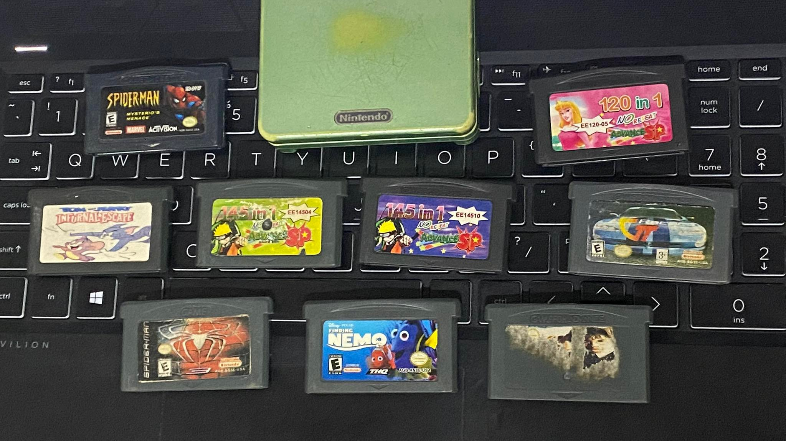

ABOUT US
I am Julian Anthony. I was born in the Philippines, currently I am 17 Years of age as of this website's creation.
I like art, stories, sceneries, knowing how things work, and of course, games.
I grew up with a bunch of exposure toward video games. A lot of my early memories were either from school or games.
Some of the first games I had played were Lego Star Wars and some Game Boy Advance games, bootlegs and not.

Since then, I was always curious as to how people were able to make these games, and I found out later on that they worked as a company.
At some point I found out about indie games and soon after I found that they were worked on by a few people and sometimes even just one!
Child me was astonished at how they could possibly do this on their own, as I felt that indie games were on par in terms of quality compared to those made by companies.
Especially the likes of Toby Fox and Scott Cawthon who made me think that I can someday make a game myself.

As years pass, the first time I ever encountered programming was in 7th grade where we learned basic html.
Then it was 10th grade, where we learned some of the C and C++ language.
Neither of those really piqued my interest however.
Here comes 12th grade where I grew as a person and before making this website, I didn't know what college course to take.


The Empowerment Technologies subject had a project that was about making a website.
Teacher said it would be about anything, it just had to meet some requirements.
I said to myself "why not make the silliest thing I could think of at that moment"
The result is this website you are currently viewing right now.
Granted, it could be much better, but I swear I'll improve this website and refine it.
Back to Main Page